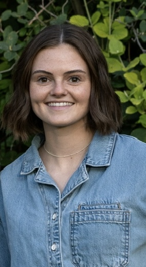

Hi, I'm Sydney!
FX Technical Director
I'm a Jr. FX Technical Director at Industrial Light & Magic, currently based in San Francisco, CA and open to relocation. I recently graduated from Brigham Young University with a Bachelor of Science in Computer Science, emphasizing in Animation. At BYU, I worked as an FX Technical Director on BYU's 2025 student film "Love and Gold" and as the FX Lead and Technical Director on BYU's 2026 student film "Honey Business".
I specialize in creating captivating visual effects and production-ready tools and workflows using both technicality and creativity. My background is in computer science and 3D animation, and I'm always looking for ways to combine my technical skills with my artistic eye. That's what drew me to the FX department in the first place! As an FX Technical Director, I've encountered so many problems that could only be solved through a combination of scripting, math, Houdini, trial and error, caffeine, and out of the box thinking. Nothing beats the satisfaction of completing a complex FX shot or finishing a unique tool that makes my job more efficient.
Take a look around my website, and I hope you enjoy my work! If you're interested in working together, please get in touch. Thanks!
Skills & Software
- SideFX Houdini
- VEX
- Foundry Nuke
- Houdini Karma
- Houdini Mantra
- Pixar RenderMan
- USD (Universal Scene Description)
- Python
- C++
- Autodesk Maya
- Adobe Substance 3D Painter
- Arnold